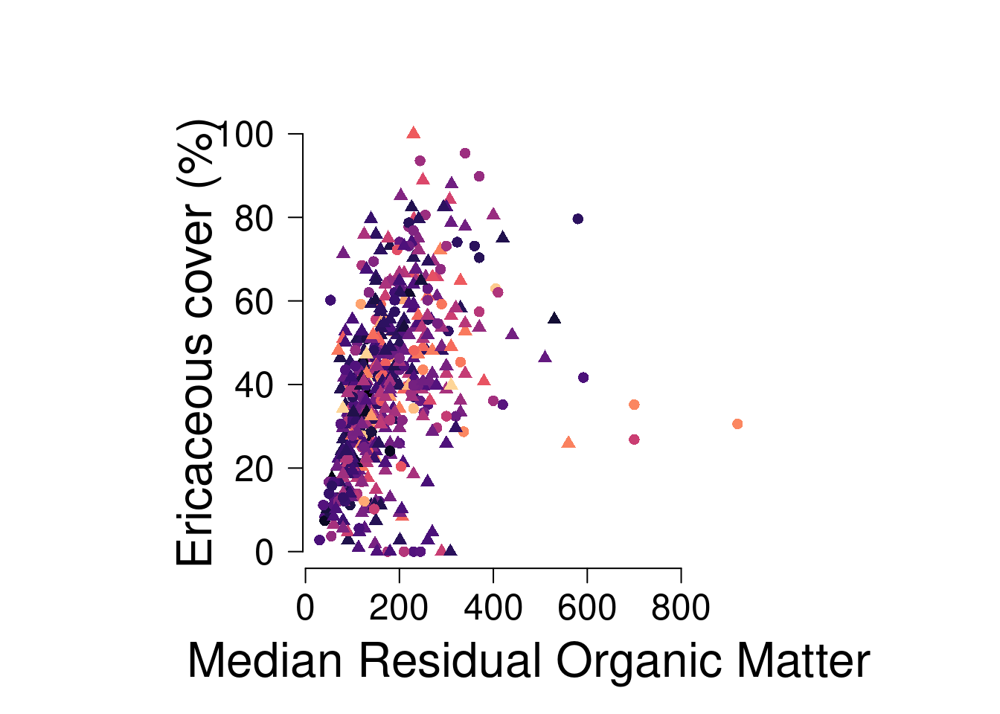
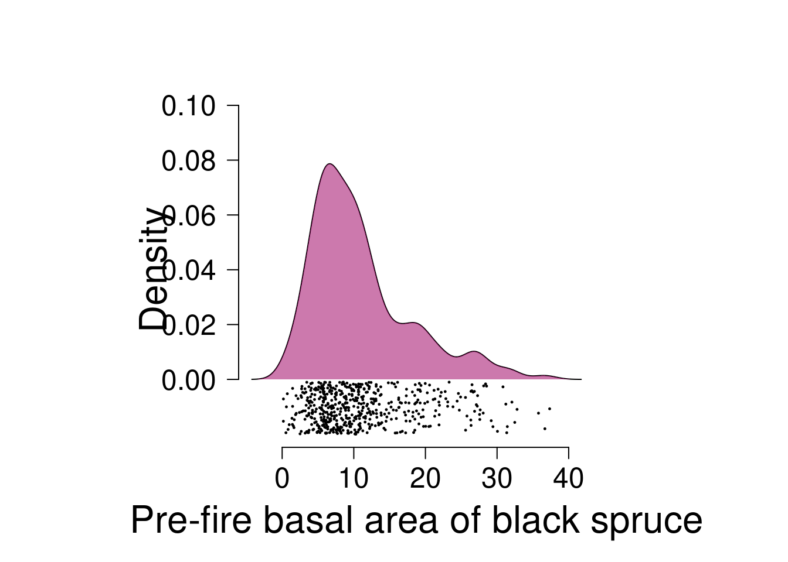

Figures are one of the main ways we communicate our findings as scientists, both to each other and to people outside our disciplines (e.g., policymakers, journalists, local communities). A good figure can convey all the main results of a paper and should stand on its own, i.e., it should be interpretable without the text for context. If a research team has done a good job on their figures, you quite frankly don’t even need to read the paper, just the figures. Of course, that isn’t always the case, but you should strive to be one of those people whose figures speak for themselves! For this week’s lab, we are going to practice creating figures that are information-rich, tell a story, and are aesthetically pleasing.
8.1 Principles of good plot design
There are a lot of design principles out there when you’re creating conceptual figures to illustrate a point, or doing design of any kind, but today we are focused just on what makes for a good plot. More specifically, my top ten pieces of advice and/or pet peeves to avoid because they make it more difficult for readers to understand your results.
1. Think about your message and how to convey it
Before you sit down to create a figure, think about what information you are trying to convey to your reader. What is it about your data or results you want them to understand? Sketching out a storyboard version can help.
2. Control how your reader interacts with your figure Most people read top to bottom and left to right, meaning the first place they will look in your figure is the top left corner. If you want to control the order in which they process information, you should also start in the top left. It also means that the bottom right corner is the last thing they will view. There is a reason many advertisements or flyers have the brand logo in the bottom right corner.
3. Only include necessary information Similar to thinking about your key message, you should only include information in your plot that is necessary. Just because you could add something doesn’t mean you should because it may just distract from the message.
4. Do not include redundant information Primarily, this principle applies to colors and symbols. Sometimes, you will see a plot where the research team has used colors and symbols redundantly. For example, red triangles are one species, and green stars are another. Those two schemes convey redundant information. Either just use red and green, or triangles and stars, not both. But, preferably, don’t use red and green because of colorblindness. Another place this shows up is with figure headers: 99% of the time, you do not need a figure header because chances are good you will label it something like “y over x” and that is completely redundant to looking at your y and x axes. It just adds visual clutter.
5. Always show the raw data Unless you are dealing with something like thousands and thousands of data points, always, always, always show the raw data in your figure. Do not include just trend lines or model outputs without showing the data used to fit the model. The same thing goes for descriptive plots: if you are going to use e.g. a boxplot to show the spread of data, include the raw data points. It tells us far more about your data than just things like the median and quartiles.
6. Color conveys, and should always have, meaning Do not include colors just to make a figure pretty. If you do not need to use color, stick with black and white. Only use color when it actually conveys information. Also, color always conveys information, and people have internalized some values or ideas associated with certain colors (though of course this varies from culture to culture). If you were to plot climate change anomalies with red indicating low temperatures and blue indicating high temperatures, you’re making your reader do mental gymnastics to interpret the figure.
7. Use vectors, or high resolution images, whenever possible Vectors represent images with equations. You can zoom in on them infinitely and still have a nice crisp edge. Flattened or rasterized images, however, represent images with pixels and are grainy at different resolutions. When possible, use things like .svg (scalable vector graphics) files for figures. If you do need to work with flattened images (e.g., things like .png or .tiff), try to keep them as high resolution as possible. When you send figures to a journal, aim for at least something like 300 dpi (dots per inch) or better.
8. Make big, readable labels and axes Your axes should be extremely visible and easy to read, as should your axes. And for that matter, always rotate your y-axis labels so that they are horizontal! No one wants to turn their head sideways to read your axes. Use font size (not things like bold or italics) to emphasize important information, and stick with a clear hierarchy. The only time you should use italics in a figure is for species’ names.
9. Be consistent in symbol and color use Don’t switch what things mean partway through your plots. It will confuse your readers.
10. Never use pie charts Pie charts are terrible. People are horrible at visualizing the shape of a triangle, let alone a wedge, and it makes it really difficult to compare values across wedges. Just don’t use them. The one exception is when you are showing things like genotype frequencies across a landscape.
8.2 Plot types
For lab today, we are going to work with a hot-off-the-press dataset on characteristics of burned forests which was just posted on (DataDryad)[https://doi.org/10.5061/dryad.gtht76j1k] in February 2026 to accompany a (preprint by Fortin et al.)[https://doi.org/10.1101/2025.05.17.654490] on fire severity and forest resilience. Go to Dryad to download the dataset, and make a note of where you save the file to because you will need to read it from that location.
# read in the datadat <-read.csv("~/Downloads/dataset.csv", sep=";")# inspect it to see what we are dealing withhead(dat)
id_unique stocking_bs_jp id_fire time_since_fire
Length:539 Min. : 0.000 Length:539 Min. : 4.00
Class :character 1st Qu.: 2.000 Class :character 1st Qu.: 8.00
Mode :character Median : 4.000 Mode :character Median :10.00
Mean : 4.245 Mean :10.48
3rd Qu.: 6.000 3rd Qu.:12.00
Max. :10.000 Max. :22.00
latitude longitude seasonality_real_date seasonality_adjusted
Min. :49.70 Min. :-73.58 Length:539 Min. : 34.00
1st Qu.:50.28 1st Qu.:-71.97 Class :character 1st Qu.: 57.00
Median :50.70 Median :-71.69 Mode :character Median : 68.00
Mean :50.67 Mean :-71.09 Mean : 68.51
3rd Qu.:50.83 3rd Qu.:-71.02 3rd Qu.: 89.00
Max. :51.90 Max. :-67.68 Max. :105.00
CBI sphagnum_cover ericaceous_cover rom_med
Min. :1.133 Min. : 0.000 Min. : 0.00 Min. : 30.0
1st Qu.:1.954 1st Qu.: 0.000 1st Qu.: 25.00 1st Qu.:110.8
Median :2.163 Median : 0.000 Median : 39.81 Median :157.0
Mean :2.134 Mean : 3.908 Mean : 39.58 Mean :178.2
3rd Qu.:2.359 3rd Qu.: 4.396 3rd Qu.: 51.85 3rd Qu.:226.5
Max. :2.743 Max. :58.242 Max. :100.00 Max. :920.0
age basal_area_prefire_bs prefire_bs_proportion seedlings_ha_bs
Min. : 46.5 Min. : 0.1698 Min. : 50.01 Min. : 0
1st Qu.:106.5 1st Qu.: 5.9281 1st Qu.: 88.37 1st Qu.: 1000
Median :146.0 Median : 9.1828 Median : 98.17 Median : 2750
Mean :158.1 Mean :10.9349 Mean : 91.79 Mean : 6397
3rd Qu.:197.0 3rd Qu.:13.6174 3rd Qu.:100.00 3rd Qu.: 6750
Max. :358.0 Max. :37.3421 Max. :100.00 Max. :151000
seedlings_ha_jp seedlings_ha_bl
Min. : 0 Min. : 0.0
1st Qu.: 0 1st Qu.: 0.0
Median : 0 Median : 0.0
Mean : 1228 Mean : 231.4
3rd Qu.: 500 3rd Qu.: 0.0
Max. :54250 Max. :6500.0
8.2.1 Maps
The first thing we are going to do is plot the site locations. If you aren’t able to install rnaturalearth, just plot the sites and don’t put them on top of a map of Québec. We will talk about what all this code does and why we run it in lab today.
Our goal: plot the location of all the fires included in the study colored by the age of the fire.
Next, let’s create a boxplot showing the composite burn index values measured per fire, with boxes colored by the basal area of black spruce at the site prior to the fire.
Scatterplots are one of the most basic plots we make all the time in ecology. Let’s make a plot of the relationship between the median thickness of residual organic matter (ROM) and the percent ericaceous cover by forest age. Let’s assume ROM predicts ericaceous cover. I’m not a plant person, but let’s go with that. Color the points by the age of the forest. Use a circle to show sites with a CBI less than 2, and a triangle for sites with a CBI between 2-3.
# scatterplot of rom_med and ericaceous cover by forest agepar(mfrow=c(1,1), pty="s", las=1, cex.lab=2, cex.axis=1.5)plot(dat$rom_med, dat$ericaceous_cover,col=viridis::magma(256)[cut(dat$age, 256)],pch=c(16, 17)[factor(cut(dat$CBI, c(0, 2, 3)))],ylab="Ericaceous cover (%)", xlab="Median Residual Organic Matter",axes=F)axis(1); axis(2)

Plot the density of the basal area of black spruce pre-fire. Fill in the area under the curve with a polygon. Add the points below the polygon, making it a raincloud plot.
dens <-density(dat$basal_area_prefire_bs)par(las=1, pty="s", mfrow=c(1,1), cex.lab=2, cex.axis=1.5)plot(dens$x, dens$y, type="l", xlab="Pre-fire basal area of black spruce", ylab="Density", axes=F,ylim=c(-.02, .1))axis(1); axis(2, at=seq(0, 0.1, 0.02))polygon(x =c(dens$x, rev(dens$x)), y=c(rep(0, length(dens$y)), rev(dens$y)), col="#a0056588", border = F)points(runif(length(dat$basal_area_prefire_bs), -0.02, -0.001) ~ dat$basal_area_prefire_bs, pch=19, cex=0.2)

There aren’t really sensible types of data in this dataset for a barplot, which rarely convey much information anyways, but let’s create one just for fun.
# you can install some packages in R to help with palettes# if you don't want to define them yourself# a few popular ones are viridis, RColorBrewer, and wesandersonRColorBrewer::display.brewer.all()